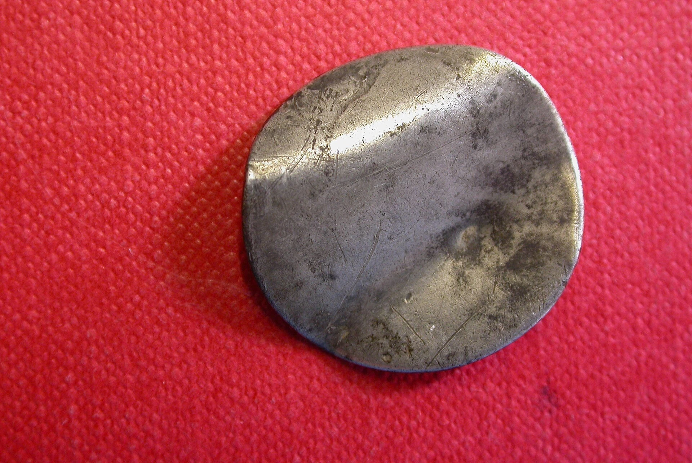

イギリス英語のスラングでは、「bender」は一般的に「深酒」とされる。より正確に言えば、「酒や薬に浸りきっている期間」を意味する。
具体的には、「go on a bender」のような形で使われる。単なる飲み会ではなく、ブレーキが壊れたように何日も飲み続けるような飲み方だ。飲酒だけでなく、薬物にふけり続けるような場合にも使われる。
After failing his exams, John went on a bender for the entire weekend.（ジョンは試験に落ちた後、週末中ずっと飲み続けた）
She's been on a three-day bender and now she can barely stand up.（彼女は3日間飲み続けたため、もうほとんど立っていられない）
「曲げるもの」から「飲み続ける」へ
「bend」は「曲げる」を意味する基本的な動詞だ。パイプを曲げる工具のことを「bender」と言うように、bend + erで「曲げるもの」という、ごく素直な意味になる。
では、なぜその「曲げるもの」が「飲み続ける」を意味するようになったのか。
英語の語源辞典「Online Etymology Dictionary」によれば、この意味での「bender」の初出は1846年のアメリカだ。語源は確定していないが、同辞典は二つの可能性を挙げている。
- 18世紀のスコットランド語で「酒豪」を意味する「bender」という用法が記録されており、それが海を渡ってアメリカに入り、「酒を飲み続ける期間」の意味に変わったという説。
- 酒を飲むときにグラスを口に運ぶ動作、つまり、肘を繰り返し曲げる（bend one's elbow）ところから来たという説。
残念ながら、どちらも正確な語源と言える決定的な証拠はない。
6ペンス銀貨の伝説
語源辞典の説とは別に、もうひとつ、イギリスでは広く知られた語源説がある。英国王立造幣局（The Royal Mint）の公式サイトで紹介されている「6ペンス銀貨説」だ。
イギリスでは、1551年のエドワード6世の時代から、通貨の十進法化により1980年に完全に廃止されるまで、400年以上にわたって6ペンス銀貨が使用されていた。
6ペンス銀貨は薄く、また、かつては銀の含有量が高かったため、手で簡単に曲げることができたそうだ。この曲げられた銀貨が「bender」と呼ばれた。
こうして手で曲げた6ペンス銀貨は、「love token（愛の証）」として意中の人に贈る風習があった。
ちなみに、曲げられた銀貨は今も多くが現存している。

また、かつては、6ペンスもあればパブで一日中飲み続けることができた。そこから「going on a bender（benderで飲みに行く＝飲み明かす）」というイディオムが生まれたという――。
Royal Mintの公式サイトでこのように説明されているため、この説はイギリスの一般の人たちにも広く浸透している。
ただし、先に触れたとおり、「酒浸りの期間」を意味する「bender」の文献上の初出は1846年のアメリカ英語だ。
イギリスのパブの風習が起源なら、もっと古いイギリスの文献に飲酒の意味の用例が見つかってもよさそうだが、そうした記録は今のところ確認されていない。
魅力的な話ではあるが、あくまで俗説と考えた方がよさそうだ。
イギリスでは要注意の別の意味も
ここまで「酒浸りの期間」という意味の「bender」について語ってきたが、イギリスのスラングでは「bender」にまったく別の意味があることに注意したい。
たとえば、「Collins English Dictionary」には、「British offensive, slang」として、「bender」に同性愛者の男性を指す侮蔑語としての用法があることが明記されている。
異性愛者を「straight（まっすぐ）」と呼ぶのに対し、同性愛者を「bent（曲がっている）」と呼ぶ差別的な表現があり、その名詞形が「bender」だ。
これは深刻な侮蔑語で、ちょっとした冗談では済まされない。
なお、これは単に知らなかった例だが、アメリカのインディーバンド「The Morning Benders」が、2012年のイギリスツアーを前にそのことを指摘され、バンド名を「POP ETC.」に変更している。
「on a bender」「went on a bender」「a three-day bender」のように使う分には誤解は生じない。
ただし、人を指して「He's a bender」のような使い方をすると、侮蔑として受け取られる可能性大だ。文脈をはっきりさせて使わないと思わぬ事故になりかねないので注意したい。